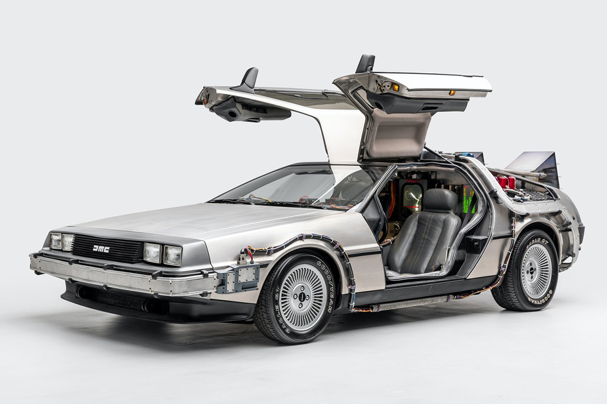

Impossible de parler de voitures cultes sans mentionner la DeLorean DMC-12, la voiture emblématique du Retour vers le Futur (1985), qui a traversé les décennies avec une popularité toujours aussi forte. Conçue par l’ingénieur John DeLorean, cette voiture futuriste se distingue par son design unique, avec ses portes papillon et sa carrosserie en acier inoxydable non peint, un look résolument avant-gardiste pour l’époque. Dans le film, la DeLorean devient bien plus qu'un simple véhicule : elle se transforme en machine à voyager dans le temps grâce aux innovations imaginées par le Dr Emmett Brown, avec son flux capaciteur et son moteur nucléaire. À chaque apparition, la DeLorean incarne l'esprit d'aventure et la possibilité infinie des voyages temporels, transportant Marty McFly et le spectateur à travers différentes époques, de 1955 à 2015. Avec sa capacité à dépasser les 88 miles par heure pour enclencher le voyage temporel, elle a marqué l’histoire du cinéma. Aujourd’hui, la DeLorean reste l’un des véhicules les plus recherchés et admirés par les collectionneurs, devenant un symbole à la fois de la science-fiction et de l'ingéniosité automobile.
